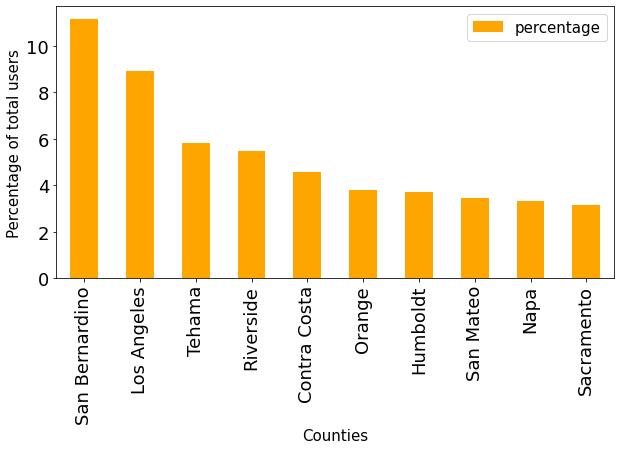

County-Wise
Fig 1: Top 10 California counties based on percentage of users

Fig 2: Top 10 US counties bar chart for number of users

Fig 3: Top 10 US states bar chart for user percentages
Fig 4: States choropleth based on number of users
Fig 5: California counties choropleth based on density of users